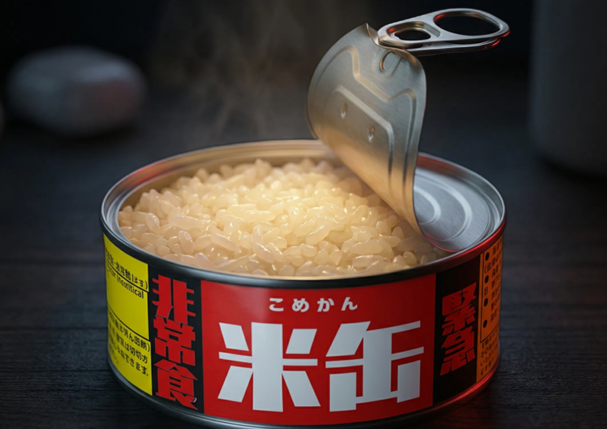

「食べる」を越えて、
共に農と地域の未来を創る。
米缶を手にしてくださったあなたは、すでに私たちの活動を支える大切な「パートナー」です。
私たちは、単なる作り手と買い手の関係を越え、関川村の風景を守り、新しい工場を建て、
誇れる未来を共につくる「家族」のような繋がりを目指しています。
あなたの備えが、この土地の希望に変わる。その物語の続きを、一番近くで見守っていただけませんか。
（米缶1缶で守られる面積の目安）
一缶から始まる、土地の再生。
皆様からお預かりした売上の一部は、新潟県関川村の「耕作放棄地」を再生し、再び美しい田んぼへと戻すための活動資金として活用されます。
今回のあなたの「備え」は、そのまま「地域の未来」を創るための力強いサポートとなりました。

サポーターと共に創る、
「米缶専用工場」
現在、米缶は協力工場で製造していますが、私たちは関川村の中に、雇用を生み出し、新しい文化を発信する「自社拠点」としての工場建設を進めています。
今回の購入は、このプロジェクトの大きな一助となりました。ぜひ、長く続くこの歩みを、これからも側で見守っていただけると嬉しいです。
「自分の買った米缶が、あの工場のレンガ一枚になった」
そう誇らしく実感していただける場所を、一緒に創りましょう。
サポーター登録と、ささやかな御礼。
公式LINEでは、あなたが守った田んぼの風景や、工場の進捗を定期的にお届けします。
長く深く、村の未来を見守ってください。
公式LINEでサポーター登録
下のボタンから、十郷の公式LINEを友だち追加してください。これでサポーター登録は完了です。活動の最前線をお届けします。
米缶の感想をシェアする
米缶を楽しんでいる食卓のお写真やご感想をLINEでお送りください。共に歩む「初期サポーター（先着100名様）」へ、感謝のコシヒカリ1合をお贈りします。
※本企画は「米缶をご購入いただいた方」限定の登録プログラムです。
※お写真や感想をシェアしていただいた初期サポーター（先着100名様）へ、感謝のコシヒカリ一合をお送りいたします。
※プレゼントのみを目的とせず、長く工場の行方や村の再生を見守っていただける方のご参加を心よりお待ちしております。